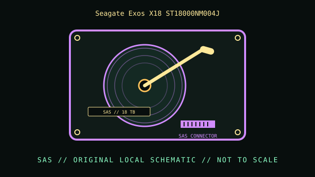

[ INDIVIDUAL COMPONENT // HARD DISK DRIVES ]
Seagate Exos X18 ST18000NM004J
18 TB Exos X18 SAS model. This record describes this exact catalog identity; related capacities, interface variants, suffixes, and revisions may have different properties.

IDENTIFICATION: Compare the complete model and suffix on the label with the manufacturer document and actual drive inquiry. Family-level values do not describe every revision or the condition of a particular unit.
Part specifications
| Catalog subcategory | SAS enterprise drives |
|---|---|
| Catalog identity | Seagate Exos X18 ST18000NM004J |
| Product family | 18 TB Exos X18 SAS model |
| Form factor | 3.5-inch enterprise; exact external dimensions are not inferred from this class. |
| Interface | SAS 12 Gb/s. |
| Capacity / performance / sectors | 18 TB; 7200 RPM; 512e sector format on the cited SAS model; helium-sealed platform. This is the SAS part ST18000NM004J, not the SATA Exos X18 SKU. |
| Compatibility | Requires SAS HBA/backplane; SATA-only hosts do not support SAS. Check controller/enclosure support for 512e, link speed, power, vibration, and firmware. |
Handling, service & preservation
- Retain precise model and firmware/SAS inquiry data. Follow high-capacity enclosure handling/thermal guidance; do not open a helium-sealed assembly. Keep verified independent backups.
- Before service, photograph the label, connectors, board markings, firmware/model identity, and installed carrier; note condition and any prior repair.
- Never open a hard disk outside a qualified clean environment. Mechanical shocks, contamination, and uncontrolled power cycling can worsen failure.
- For preservation, make independent verified copies and record checksums and read errors; SMART or self-test results are useful evidence but do not guarantee future reliability.
Model-specific source
- Seagate Exos X18 SAS product manual, document 100865853 (manufacturer PDF)Seagate SAS manual covers ST18000NM004J model class; distinguish it from the SATA ST18000NM000J family member.
Values above are limited to the cited exact-model or clearly identified model-family document. Record the document revision with any collection measurements.